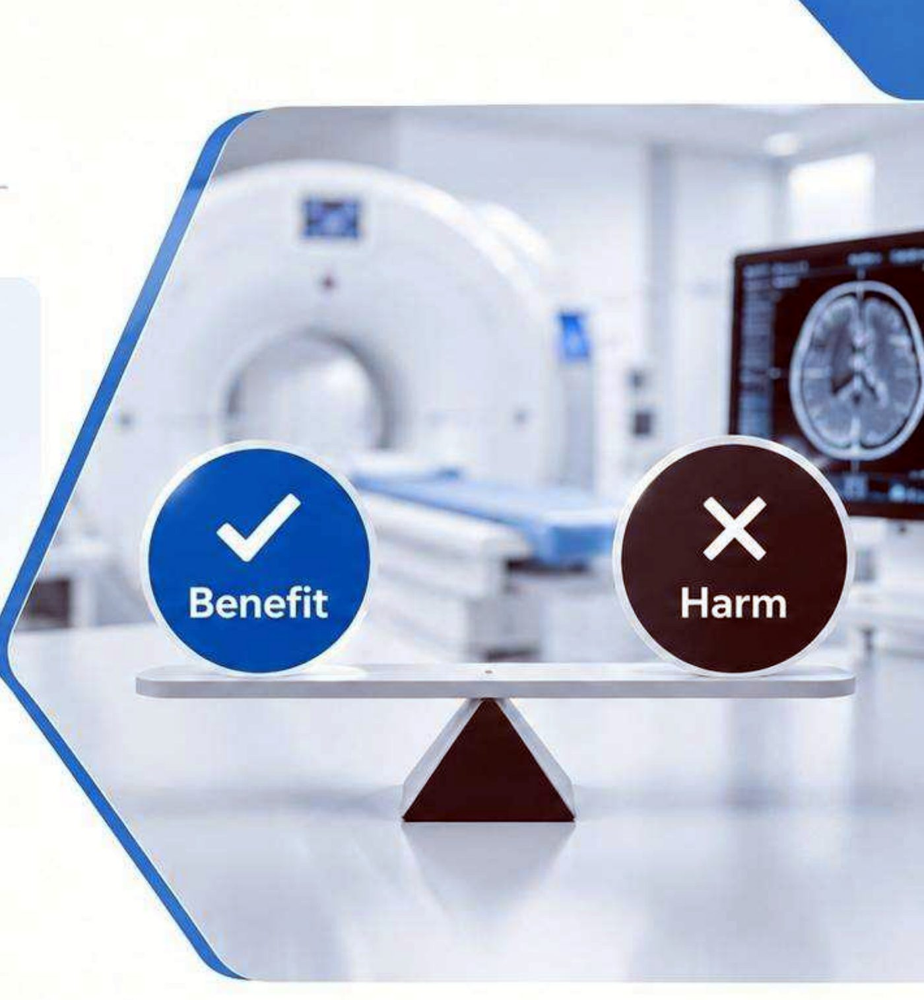
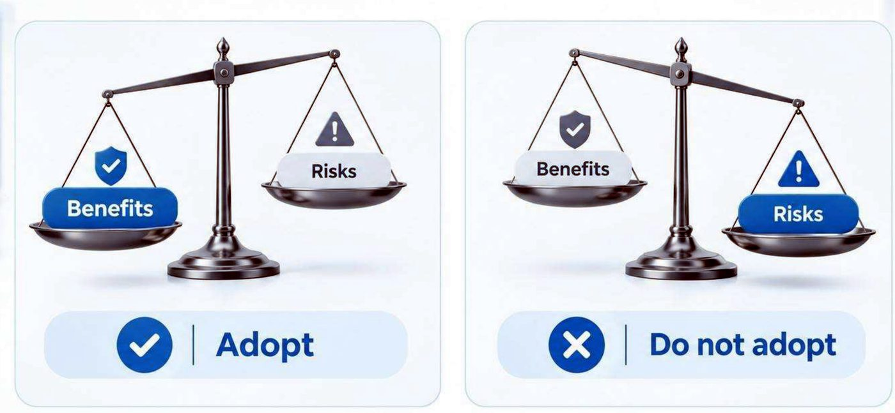
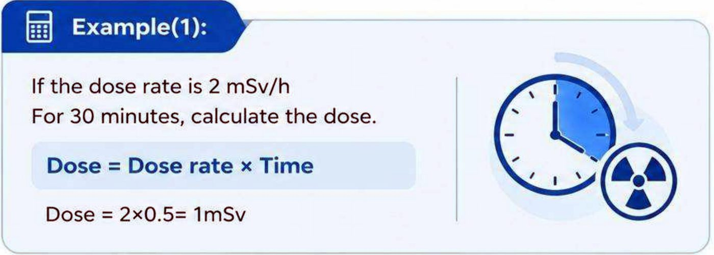
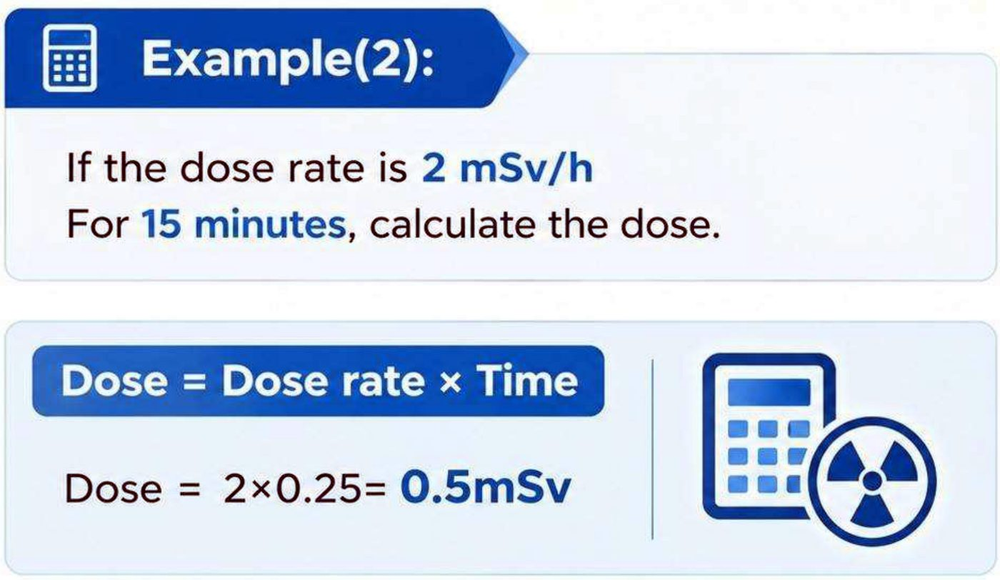
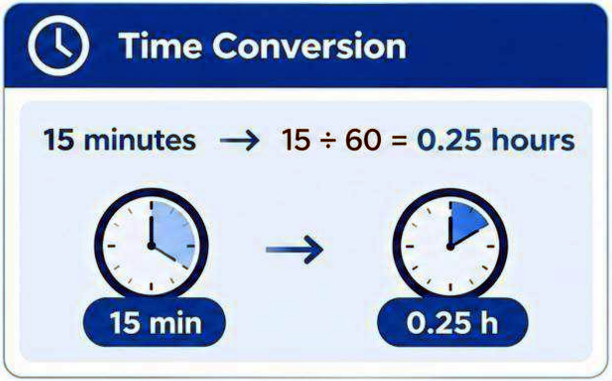
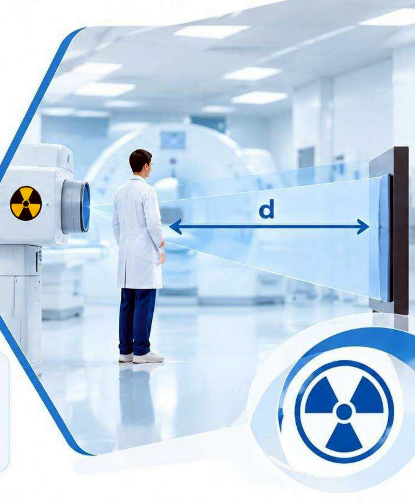
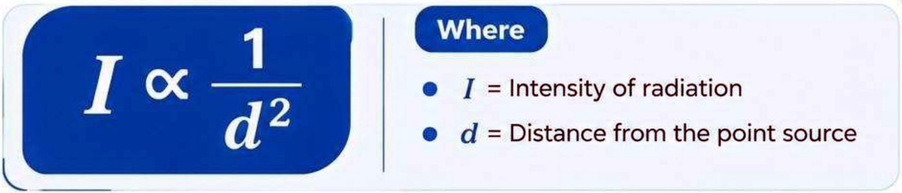
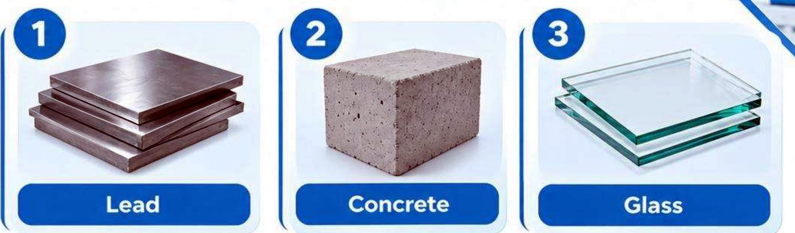
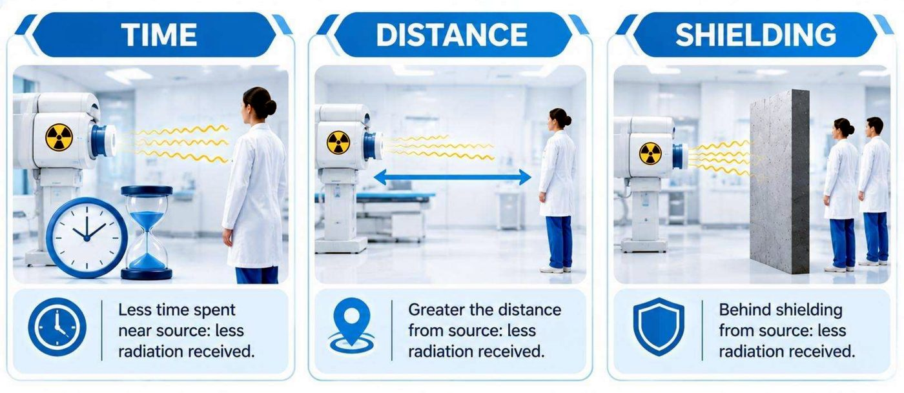

مبادئ الوقاية من الإشعاعThe Principles of Radiological Protection
عملي · م03 · 3.6 دقيقةأقسام المحاضرة (7)
مبادئ الوقاية من الإشعاعThe Principles of Radiological Protection
The principles of radiological protection are based on international guidelines and recommendations established by organizations like:
تستند مبادئ الوقاية من الإشعاع إلى إرشادات وتوصيات دولية وضعتها منظمات مثل:
- • The International Commission on Radiological Protection (ICRP).اللجنة الدولية للوقاية من الإشعاع (ICRP).
- • The International Atomic Energy Agency (IAEA).الوكالة الدولية للطاقة الذرية (IAEA).
المبادئ الأساسية للوقاية من الإشعاعFundamental Principles of Radiological Protection
The system of radiological protection is based on three fundamental principles:
يقوم نظام الوقاية من الإشعاع على ثلاثة مبادئ أساسية:
- 1. Justificationالتبرير.
- 2. Optimizationالأمثَلة: جعل الجرعة أقل ما يمكن بشكل معقول — ALARA.
- 3. Dose Limitationتحديد الجرعة.
التبريرJustification
The principle of justification states: Any decision that alters the radiation exposure situation should do more good than harm.
ينص مبدأ التبرير على أن: أي قرار يغيّر حالة التعرّض للإشعاع يجب أن يجلب نفعاً أكثر من الضرر.

In other words, a radiation procedure should only be performed when its expected benefit is greater than the radiation detriment associated with it.
بعبارة أخرى، لا يُجرى الإجراء الإشعاعي إلا عندما تكون فائدته المتوقعة أكبر من الضرر الإشعاعي المرتبط به.

أمثَلة الحماية (مبدأ ALARA)Optimization of Protection (ALARA)
Also known as the ALARA principle (As Low As Reasonably Achievable) involves minimizing radiation exposure to individuals while still achieving the necessary goals. This involves:
يُعرف أيضاً بمبدأ ALARA (أقل ما يمكن بلوغه بصورة معقولة)، ويعني تقليل تعرّض الأفراد للإشعاع مع الاستمرار في تحقيق الأهداف الضرورية. ويتضمن ذلك:
- 1. Minimizing unnecessary exposureتقليل التعرّض غير الضروري.
- 2. Using the least amount of radiation necessary for the taskاستعمال أقل كمية من الإشعاع تكفي لأداء المهمة.
مبدأ ALARAALARA Principle
The ALARA principle is one of the most important practical concepts in radiation protection. Three major practical methods are:
مبدأ ALARA من أهم المفاهيم العملية في الوقاية من الإشعاع. وطرقه العملية الرئيسة ثلاث:
- 1. Timeالوقت.
- 2. Distanceالمسافة.
- 3. Shieldingالتدريع.
الوقتTime
The radiation dose received by a radiation worker generally increases with the time spent near a radiation source.
الجرعة الإشعاعية التي يتلقاها العامل في مجال الإشعاع تزداد عموماً مع الوقت الذي يقضيه قرب مصدر الإشعاع.
Therefore: Reduce the time spent near the radiation source.
لذلك: قلّل الوقت الذي تقضيه قرب مصدر الإشعاع.
المثال (1)Example (1)
If the dose rate is 2 mSv/h for 30 minutes, calculate the dose. Dose = Dose rate × Time; Dose = 2×0.5 = 1 mSv
إذا كان معدّل الجرعة 2 mSv/h (ملّي سيفرت في الساعة) لمدة 30 دقيقة، احسب الجرعة. الجرعة = 2 × 0.5 = 1 mSv.

المثال (2)Example (2)
If the dose rate is 2 mSv/h for 15 minutes, calculate the dose. Time conversion: 15 minutes → 15 ÷ 60 = 0.25 hours. Dose = Dose rate × Time; Dose = 2×0.25 = 0.5 mSv
إذا كان معدّل الجرعة 2 mSv/h لمدة 15 دقيقة، احسب الجرعة. تحويل الزمن: 15 دقيقة ← 15 ÷ 60 = 0.25 ساعة. الجرعة = 2 × 0.25 = 0.5 mSv.


Therefore, reducing the exposure time leads to a reduction in the dose.
لذلك فإن تقليل زمن التعرّض يؤدي إلى انخفاض الجرعة.
المسافةDistance
- • Increasing the distance from a radiation source reduces radiation exposure.زيادة المسافة عن مصدر الإشعاع تقلل التعرّض للإشعاع.
- • The radiation intensity approximately follows the Inverse Square Law.شدة الإشعاع تتبع تقريباً قانون التربيع العكسي.
- • The Inverse Square Law states that the intensity of radiation from a point source is inversely proportional to the square of the distance from that source.ينص قانون التربيع العكسي على أن شدة الإشعاع من مصدر نقطي تتناسب عكسياً مع مربع المسافة عن ذلك المصدر.


التدريعShielding
- • Shielding means placing an appropriate material between the radiation source and the person to reduce radiation exposure.التدريع يعني وضع مادة مناسبة بين مصدر الإشعاع والشخص لتقليل التعرّض للإشعاع.
- • The choice of shielding material and thickness depends on the type and energy of the radiation.اختيار مادة التدريع وسُمكها يعتمد على نوع الإشعاع وطاقته.
- • Common shielding materials include:من مواد التدريع الشائعة:
- 1. Leadالرصاص.
- 2. Concreteالخرسانة.
- 3. Glassالزجاج.

الوقت والمسافة والتدريع معاًTime, Distance, Shielding

تحديد الجرعةDose Limitation
- • Dose limitation involves setting and enforcing exposure limits for both occupational workers and the general public.تحديد الجرعة يعني وضع حدود للتعرّض وفرض الالتزام بها للعاملين المعرَّضين مهنياً ولعامة الناس.
- • These limits are typically expressed in terms of effective dose and are designed to prevent radiation related health effects.ويُعبَّر عن هذه الحدود عادةً بالجرعة الفعّالة، وهي مصممة لمنع الآثار الصحية المرتبطة بالإشعاع.


المحاضرة مسموعة
نص الأستاذ بالإنكليزي مثل الأصل · 3.6 دقيقة. اضغط أي جملة تسمعها، أو مصطلح منقّط تسمع لفظه ومعناه.
The Principles of Radiological Protectionمبادئ الوقاية من الإشعاع
The Principles of Radiological Protection
The principles of radiological protection are based on international guidelines and recommendations established by organizations like:
The International Commission on Radiological Protection (ICRP).
The International Atomic Energy Agency (IAEA).
Fundamental Principles of Radiological Protection
The system of radiological protection is based on three fundamental principles:
Justification
Optimization
Dose Limitation
Justificationالتبرير
Justification
The principle of justification states: Any decision that alters the radiation exposure situation should do more good than harm.
In other words, a radiation procedure should only be performed when its expected benefit is greater than the radiation detriment associated with it.
Optimization of Protection (ALARA)أمثَلة الحماية (مبدأ ALARA)
Optimization of Protection (ALARA)
Also known as the ALARA principle (As Low As Reasonably Achievable) involves minimizing radiation exposure to individuals while still achieving the necessary goals. This involves:
Minimizing unnecessary exposure
Using the least amount of radiation necessary for the task
ALARA Principle
The ALARA principle is one of the most important practical concepts in radiation protection. Three major practical methods are:
Time
Distance
Shielding
Timeالوقت
Time
The radiation dose received by a radiation worker generally increases with the time spent near a radiation source.
Therefore: Reduce the time spent near the radiation source.
Example (1)
If the dose rate is 2 mSv/h for 30 minutes, calculate the dose. Dose = Dose rate × Time; Dose = 2×0.5 = 1 mSv
Example (2)
If the dose rate is 2 mSv/h for 15 minutes, calculate the dose. Time conversion: 15 minutes → 15 ÷ 60 = 0.25 hours. Dose = Dose rate × Time; Dose = 2×0.25 = 0.5 mSv
Therefore, reducing the exposure time leads to a reduction in the dose.
Distanceالمسافة
Distance
Increasing the distance from a radiation source reduces radiation exposure.
The radiation intensity approximately follows the Inverse Square Law.
The Inverse Square Law states that the intensity of radiation from a point source is inversely proportional to the square of the distance from that source.
Where: I = Intensity of radiation; d = Distance from the point source
Shieldingالتدريع
Shielding
Shielding means placing an appropriate material between the radiation source and the person to reduce radiation exposure.
The choice of shielding material and thickness depends on the type and energy of the radiation.
Common shielding materials include:
Lead
Concrete
Glass
Time, Distance, Shielding
Dose Limitationتحديد الجرعة
Dose Limitation
Dose limitation involves setting and enforcing exposure limits for both occupational workers and the general public.
These limits are typically expressed in terms of effective dose and are designed to prevent radiation related health effects.
23 سؤال من نص المحاضرة، ويّا «ليش صح» بعد كل جواب.
ابدأ الاختباراضغط أي مصطلح منقّط تسمع لفظه ومعناه.
PDF ثنائي اللغة: نص الأستاذ + الترجمة + الخلاصة + الأسئلة · 1.9 MB
تحميل الملف